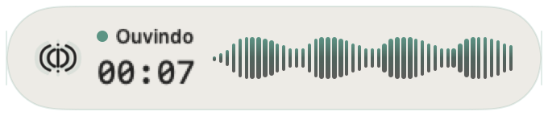
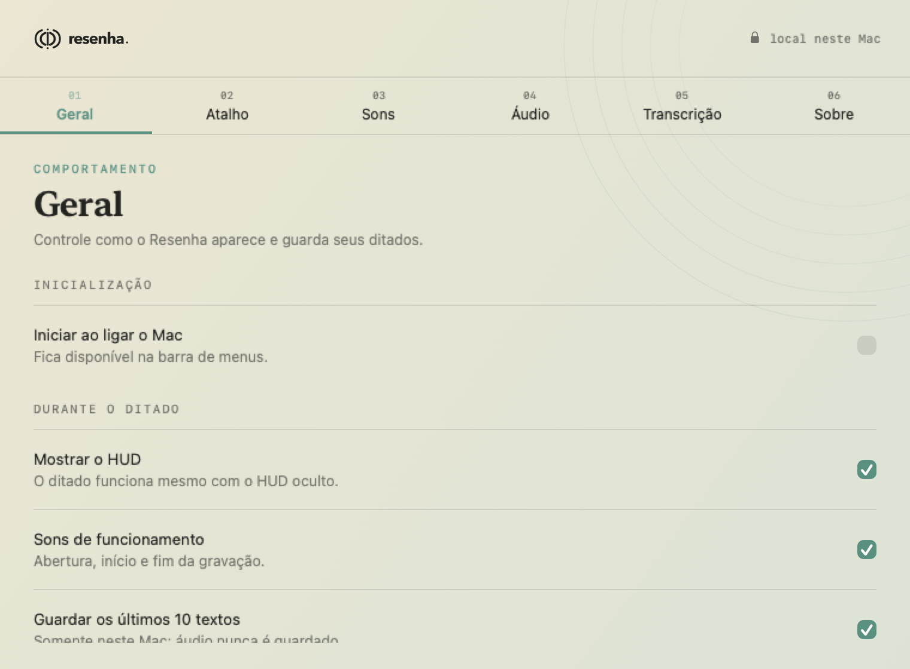
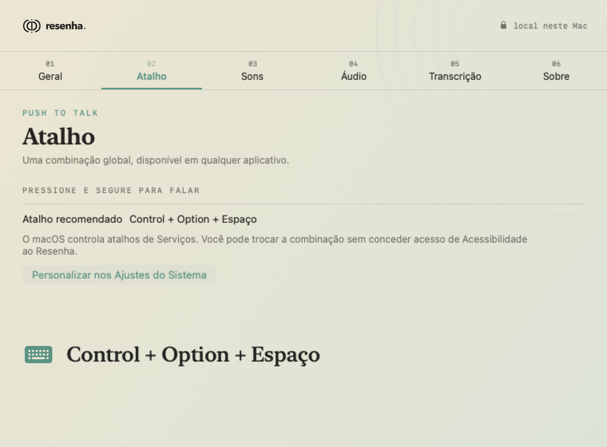
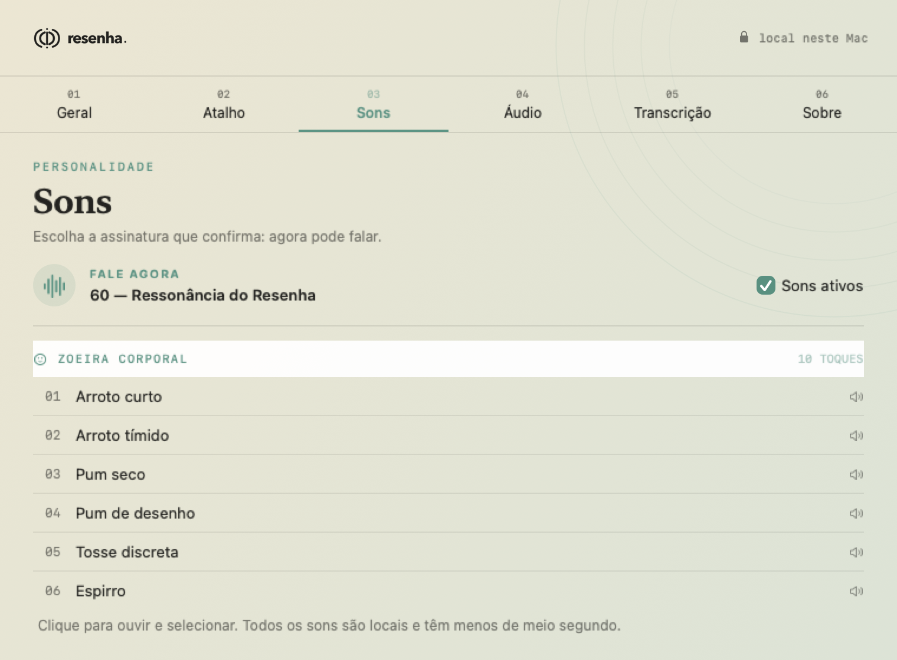
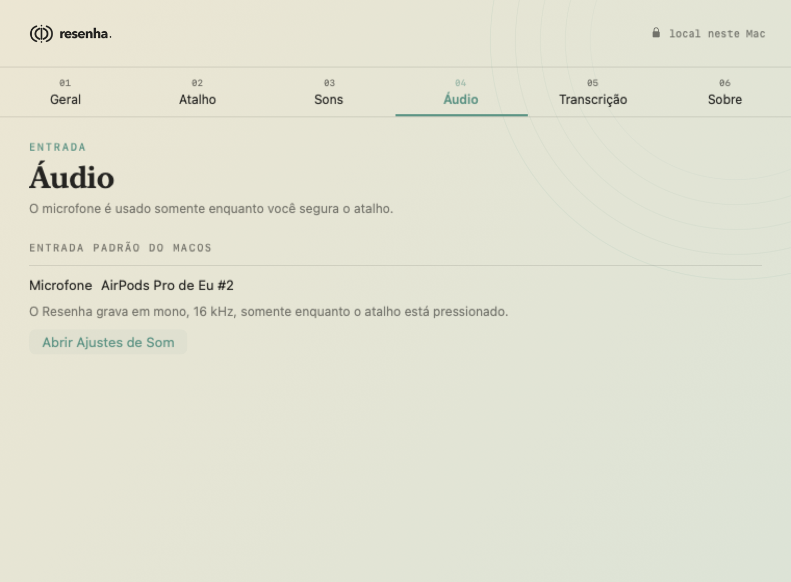
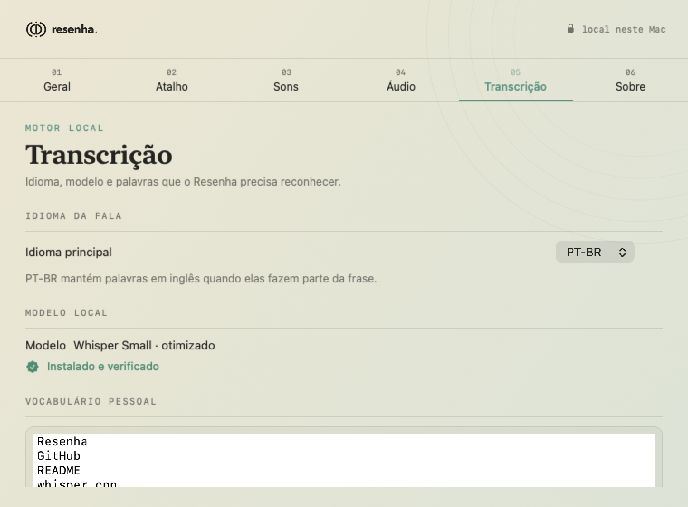
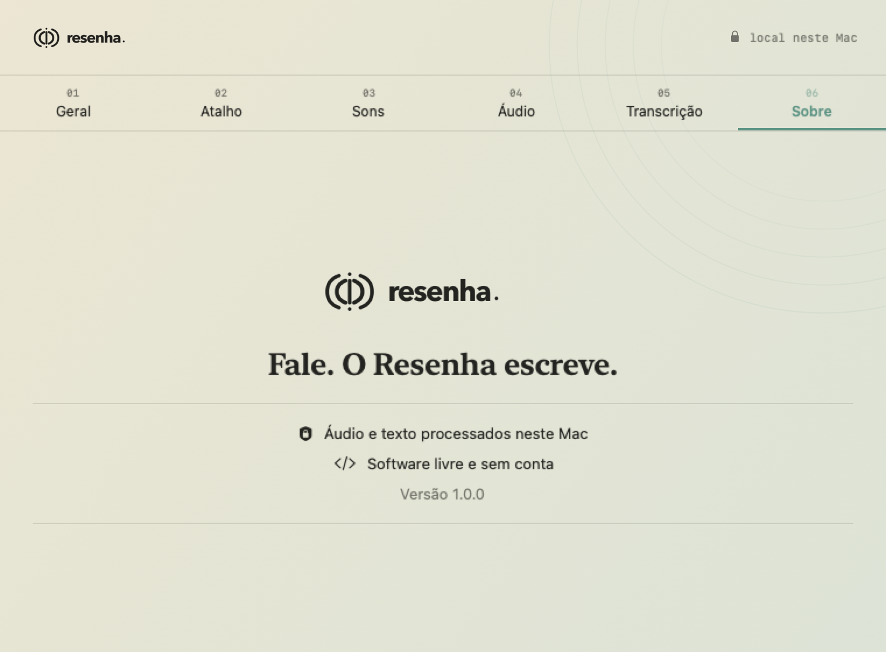

Leve de verdade
Swift, SwiftUI e AVFoundation. Sem Electron, sem Python e sem servidor escondido.
A alternativa open source ao Wispr Flow
Ditado gratuito para Mac, sem conta e sem assinatura. O Resenha transcreve localmente e escreve onde o cursor já está.
NOTA DE VOZ / 001
A ideia não
precisa esperar
seus dedos.

Interface real do app · escala ampliada
R$ 0para usar
Sem tetosemanal de palavras
MITcódigo aberto
Localáudio fica no Mac
Resenha × Wispr Flow
O plano gratuito do Wispr Flow informa um limite semanal no desktop. O Resenha não impõe franquia: ele roda no seu próprio Mac, sob licença MIT.
Ver a comparação completaUm gesto. Três momentos.
Deixe o cursor no campo e mantenha o atalho escolhido no Resenha pressionado.
O HUD responde ao ritmo da sua voz e confirma que está ouvindo.
O Whisper transcreve localmente. O texto volta ao campo pelo macOS.
O atalho é gravado dentro do Resenha. A permissão de Acessibilidade devolve o texto ao aplicativo ativo.
O produto, sem maquiagem
Vídeos e capturas gerados com os próprios componentes SwiftUI do aplicativo.
Demonstração do HUD nativo nos estados Ouvindo, Transcrevendo e Inserindo.
Geral, atalho, sons, áudio, transcrição e informações do aplicativo.






Arraste para explorar · proporção nativa preservada · nenhum corte
Sua voz não é matéria-prima.
O microfone é capturado pelo AVFoundation e transcrito no próprio computador com whisper.cpp. Não existe backend, conta, telemetria ou chave de API.
A internet é usada somente no primeiro download do modelo local de voz. Depois, o ditado funciona offline.
Construído para o Mac
Swift, SwiftUI e AVFoundation. Sem Electron, sem Python e sem servidor escondido.
Inferência arm64 acelerada por Metal e Accelerate, empacotada dentro do aplicativo.
Escolha a tecla dentro do Resenha. Acessibilidade devolve o texto ao campo ativo.
Estados visuais, sons opcionais, contraste aumentado, transparência e movimento reduzidos.
Código aberto sem letra miúda
O Resenha é distribuído sob licença MIT. O app, as especificações SDD e os testes ficam públicos para auditoria e contribuição.
Versão 1.0 para macOS
Grátis, open source, sem limite semanal e otimizado para Apple Silicon. Requer macOS 14 ou posterior.
Perguntas diretas
Não. A transcrição acontece dentro do Mac. Só o download inicial do modelo usa a internet; depois disso, o ditado funciona localmente.
Não. O runtime whisper.cpp faz parte do aplicativo. Na primeira configuração, o Resenha baixa e verifica o modelo de voz.
Sim. Grave qualquer tecla ou combinação dentro do próprio Resenha, inclusive Option direita isolada.
Sim, para quem procura ditado no Mac sem assinatura, sem conta e sem limite semanal. O Resenha é local e open source; não tenta reproduzir todos os recursos em nuvem e de equipe do Wispr Flow.
Português do Brasil, inglês e espanhol. Em PT-BR, o vocabulário pessoal ajuda a preservar nomes, siglas e palavras em inglês.
O foco da versão 1.0 é macOS com Apple Silicon. Windows continua no roteiro, mas ainda não tem data pública.